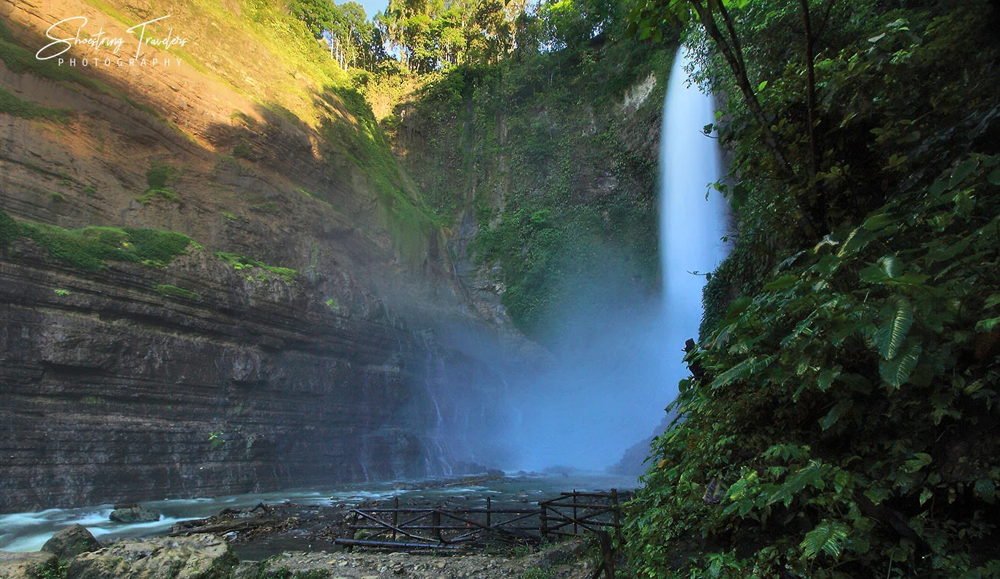

Unwind at the Serene Lake Sebu
Lake Sebu, nestled in the highlands of South Cotabato, is a tranquil paradise known for its breathtaking lakes, majestic waterfalls, and vibrant T'boli culture. It’s the perfect destination for those seeking peace and cultural enrichment.
What's Included:
- Transportation: Round-trip transfers from General Santos City to Lake Sebu.
- Accommodation: 3 days and 2 nights at a lakeside resort.
- Cultural Tour: Experience the rich T'boli heritage with guided visits to weaving centers and cultural villages.
- Boat Ride: Cruise along the serene waters of Lake Sebu.
- Meals: Daily breakfast and one traditional T'boli lunch.
- Waterfalls Tour: Visit the famous Seven Falls and enjoy the breathtaking views.

Top Activities in Lake Sebu:
- Lake Cruise: Explore Lake Sebu aboard a traditional boat and take in the scenic beauty.
- Ziplining: Experience the thrill of the highest zipline in Southeast Asia over the Seven Falls.
- Weaving Demonstrations: Learn about the intricate art of T'nalak weaving by the T'boli people.
- Photography: Capture the stunning landscapes and cultural moments.
- Cultural Performances: Witness traditional T'boli music and dance performances.